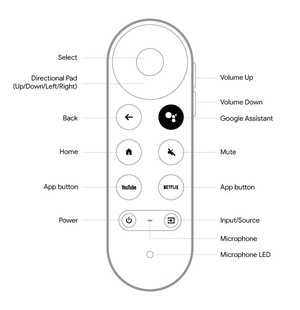

Televisions

Each room is equipped with a TV for your personal use. We have worked hard to provide an extensive media library which consists of thousands of movies and TV shows, and is constantly updated! You'll also find top trending movies and TV shows for all the popular streaming services - all of this can be accessed via the Plex app on the TV. You can log into your own streaming service if you'd like, but you likely won't need to (just remember to log out of your accounts before you head off if you do decide to log in).
In addition, the TVs in the living room and master bedroom have live TV with all the local, entertainment, kids, sports, and premium movie channels your heart could desire (and the living room has 5.1 surround sound). And fear not, the remotes are sanitized in between guests.
Please note: the live TV feature is an added bonus transmitted via a streaming service through the internet as opposed to a traditional hardwired cable outlet; for that reason the live TV service can sometimes experience "buffering" and does not come with any guarantee of reliability (and as such, live TV was not an advertised amenity).
If using the TVs to play music, we ask that you be mindful about volumes, especially early in the morning and late at night.
Below are remote diagrams, if needed. If you have any issues using these remotes, please reach out - we can help. :)
Living room and master bedroom remotes:
All other remotes:

Video Games!
If you fancy video games, we've got you covered. On the living room TV, from the main "West Hills Getaway" screen, arrow down to the Gaming category and select Boosteroid.
There are two controllers available in the cabinet above the refrigerator. Please make sure to put the controllers back there before checking out!
Board Games / Playing Cards
We have board games and playing cards, located in the kitchen pantry. Feel free to enjoy these! We just ask you to keep games organized and tidy for the next player's enjoyment.